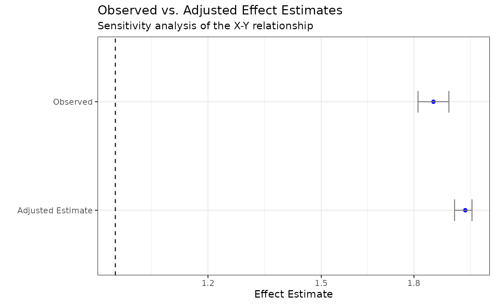

Multibias makes it easy to simultaneously adjust for multiple biases in causal inference research. This document walks you through the key steps to performing the analysis.
1. Create data_observed
Represent your observed data as a data_observed object.
Here you include the dataframe, specify the key variables in the data,
and identify the bias impacting the data. All epidemiological biases can
be generalized into four main groups:
- Uncontrolled confounding (uc)
- Exposure misclassificaiton (em)
- Outcome misclassificaiton (om)
- Selection bias (sel)
Multibias is capable of handling bias adjustment for most of the combinations of the above four biases.
For purposes of demonstration, multibias includes datasets with
different bias combinations. For a given bias or biases, it includes the
biased data (e.g., df_uc_sel: missing a confounder and not
including the un-selected subjects) and the source used to derive the
biased data (e.g., df_uc_sel_source: including data on the
missing confounder and subjects who were not selected).
Each dataset has variables defined similarly:
-
X= binary exposure -
Y= binary outcome -
C1-C3= binary confounders
df_observed <- data_observed(
df_uc_sel,
bias = c("uc", "sel"),
exposure = "X",
outcome = "Y",
confounders = c("C1", "C2", "C3")
)Running the summary() method displays the generalized
linear model results in tidy format.
summary(df_observed)
#> Note: Estimates are exponentiated (odds ratios) for binary outcomes
#> # A tibble: 5 × 7
#> term estimate std.error statistic p.value conf.low conf.high
#> <chr> <dbl> <dbl> <dbl> <dbl> <dbl> <dbl>
#> 1 (Intercept) 0.172 0.0218 -80.8 0 0.165 0.180
#> 2 X 1.87 0.0155 40.4 0 1.81 1.93
#> 3 C1 1.47 0.0155 24.7 6.99e-135 1.42 1.51
#> 4 C2 0.415 0.0237 -37.2 3.56e-303 0.396 0.434
#> 5 C3 1.29 0.0212 12.0 2.59e- 33 1.24 1.342. Create source for bias adjustment
Next, you need to have some information that can be used to quantify the assumed bias or biases. There are two options here.
Option 1: Bias parameters
One option is to list the assumed parameters for the corresponding
bias equations. The necessary bias equations are provided in the
documentation of each adjust() function. These equations
can be derived using the methods outlined in the article here. In our example, we
have bias parameters to predict the missing binary confounder
U (as the vector u_coefs) and study selection
indicator S (as the vector s_coefs).
bp <- bias_params(
coef_list = list(
u = c(-0.19, 0.61, 0.72, -0.09, 0.10, -0.15),
s = c(-0.01, 0.92, 0.94)
)
)Option 2: Validation data
A second option is to specify a validation data source as a
data_validation object. In order to adjust for a given
bias, the validation data must have the corresonding missing data. In
the example here, the validation data has additional columns for the
missing binary confounder U and indicator S
for whether a given individual was selected into the study.
df_validation <- data_validation(
df_uc_sel_source,
true_exposure = "X",
true_outcome = "Y",
confounders = c("C1", "C2", "C3", "U"),
selection = "S"
)3. Run the bias adjustment
Finally, we can run the multi-bias adjustment!
Single run
multibias_adjust(
data_observed = df_observed,
bias_params = bp
)
#> $estimate
#> [1] 2.001141
#>
#> $std.error
#> [1] 0.01361785
#>
#> $ci
#> [1] 1.948436 2.055271or
multibias_adjust(
data_observed = df_observed,
data_validation = df_validation
)
#> $estimate
#> [1] 2.0067
#>
#> $std.error
#> [1] 0.01362759
#>
#> $ci
#> [1] 1.953812 2.061021We observe that the bias-adjusted odds ratio of the effect of X on Y is approximately 2. This effect can be compared to the effect observed in the biased data to understand whether systematic error is bringing the observed effect closer to the null or further from the null.
Bootstrapping
To obtain a confidence interval that captures uncertainty in both the
random error and the systematic error, bootstrapping is advised. The
multibias_adjust() function comes with built-in parameters
that make this simple. If improved computational performance is desired,
users may want to incorporate parallelization.
adjusted_results <- multibias_adjust(
data_observed = df_observed,
data_validation = df_validation,
bootstrap = TRUE,
bootstrap_reps = 10
)
adjusted_results
#> $estimate
#> [1] 1.991388
#>
#> $std.error
#> [1] 0.02292444
#>
#> $ci
#> [1] 1.949916 2.017968When adjusting via bias parameters, the user can alternatively provide each bias parameter value as a probability distribution. The resulting confidence interval from bootstrapping can then quantify uncertainty in both the random error and the systematic error. Check out the vignette article “Multibias Validation” for a demonstration of this approach.
4. Visualize results
Data visualization of the sensitivity analysis can be performed using
multibias_plot(). The log_scale parameter
should be set to TRUE when dealing with binary outcomes.
multibias_plot(
data_observed = df_observed,
multibias_result_list = list("Adjusted Estimate" = adjusted_results),
log_scale = TRUE
)